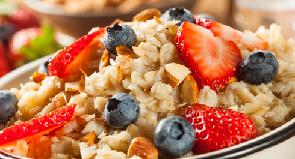
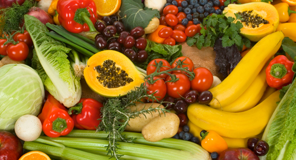
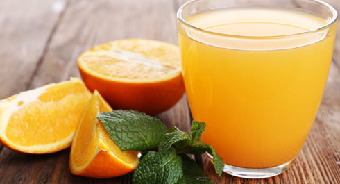

Квинтэссенцией инфопостов этой недели станет практическое руководство по самостоятельному составлению рациона питания. Приготовься к тому, что текста будет много, но мы постарались сделать его максимально простым и понятным.
Схема составления рациона
1. Посчитать калорийность текущего рациона.
2. Проверить сбалансированность по БЖУ и минералам.
3. Проверить качество продуктов.
4. Определить направление движения (набор веса, поддержание веса, снижение веса).
5. Внести корректировки в рацион, сохранив сбалансированность и качество.
6. Через 4-6 недель оценить результаты.
Калорийность текущего рациона
Для того чтобы понять, в каком направлении двигаться, необходимо сначала определиться с тем, где вы сейчас находитесь. Для этого нужно определить количество потребляемых в день калорий в настоящее время. Важно не конкретное значение в конкретный день, а среднее значение за 1-2 недели.
Для этого нужно начать записывать все, что съедается в течение дня. Можно записывать на бумаге, можно в Excel, можно в какое-нибудь приложение или на специализированном сайте. Важно записывать вообще все, потому что (и это доказано исследованиями) люди очень сильно заблуждаются (в сторону занижения) относительно того, сколько на самом деле калорий они потребляют.
Стоит отметить, что существует множество приложений и сайтов, где уже собрана большая база продуктов, и она постоянно обновляется, а также можно создавать свои рецепты и добавлять свои продукты в свою личную базу.
Хотим ещё раз обратить внимание, что во время готовки вес продуктов может меняться и это будет по-разному влиять на калорийность блюда (в идеале стоит записать вес всех кастрюль которые есть в доме — это избавит от некоторых хлопот).
Способы приготовления и калорийность
Разные способы приготовления по-разному влияют на продукты. Например, при жарке на растительном масле таких продуктов как мясо, мясные субпродукты, рыба, нужно прибавить 20% от общей калорийности масла, которое вы налили на сковороду. То есть, если налить в сковородку 100 г масла, когда жаришь мясо, то в мясо впитается около 20 г, еще часть останется на сковородке и еще часть испарится. На масле, конечно, лучше вообще не жарить, а готовить на пару или варить, но не все могут отказаться от масла.
При варке мяса и рыбы 20% его сырой калорийности вываривается в бульон. Значит, отнимаем 20%.
При варке овощей - картофель, морковь, свекла и т.д. — также отнимаем 20% от его сырой калорийности.
Если мы запекаем продукты в духовом шкафу или микроволновой печи, калорийность остается прежней.
Калорийность круп и макарон указывается на сухой продукт. При приготовлении на воде (в которой 0 калорий) они разбухают и увеличиваются в объеме. Получается, что объем и вес увеличился, а калорийность осталась прежней. И это довольно распространенная ошибка у начинающих, когда, например, варят 150 грамм риса, получая в разваренном виде грамм 800 (условно), и считают калорийность с этих 800.
При варке мяса и рыбы 20% его сырой калорийности вываривается в бульон. Значит, отнимаем 20%.
При варке овощей - картофель, морковь, свекла и т.д. — также отнимаем 20% от его сырой калорийности.
Если мы запекаем продукты в духовом шкафу или микроволновой печи, калорийность остается прежней.
Калорийность круп и макарон указывается на сухой продукт. При приготовлении на воде (в которой 0 калорий) они разбухают и увеличиваются в объеме. Получается, что объем и вес увеличился, а калорийность осталась прежней. И это довольно распространенная ошибка у начинающих, когда, например, варят 150 грамм риса, получая в разваренном виде грамм 800 (условно), и считают калорийность с этих 800.
При подсчете калорийности самое сложное - это продержаться первую неделю. Многие не могут уложить в голове все эти цифры и в итоге даже забивают на подсчет. А вот те, кто втягивается, довольно быстро создают свою базу продуктов, и в дальнейшем подсчет у них занимает не более пары минут в день. А поскольку рацион у большинства людей одинаковый и готовится по одним и тем же рецептам, то достаточно будет один раз все посчитать.
Совет для ленивых
Чтобы не считать каждый раз калорийность
отдельной порции, можно использовать различные емкости, например стеклянные
контейнеры или чашки, в качестве определителя размера порции. Тогда
достаточно будет один раз посчитать калорийность контейнера и в дальнейшем
уже мерить все контейнерами.
Сбалансированность рациона
После того как определены калорийность и состав рациона, первым делом следует проверить его на предмет сбалансированности. В предыдущих постах мы уже писали о том, что ВОЗ рекомендует придерживаться следующего соотношения: белки — 10-15%, жиры — 15-30% (включая незаменимые жирные кислоты, такие как Омега-3 и Омега-6), углеводы — 55-75%. Это соотношение дано по калорийности. Но в граммах вешать проще, поэтому если переводить в граммы, то следует помнить о том, что калорийность у 1 грамма жиров в 2 раза выше (9 против 4), чем у белков и углеводов. В итоге получится что-то вроде: белки — 11-18%, жиры — 7-16%, углеводы — 66-82%.
Ещё раз хотим напомнить, что приведенное выше соотношение - это НЕ догма, и оно может отличаться, но это то, с чего можно начать. Особенно в плане нормализации Жиров и Углеводов, ну а о роли всех "материалов" для нашего организма мы уже рассказывали.
Также нужно проверить, что в рационе присутствует клетчатка в объеме 25-30 грамм (рекомендованная суточная норма для взрослого человека). Сама по себе она не переваривается, но стимулирует моторику кишечника.
Качество продуктов
После того, как рацион сбалансирован по макронутриенам, необходимо убедиться в том, что все "материалы" получаются из качественных источников. Потому что качественными продуктами намного сложнее "перебрать" по калорийности, нежели всякими тортиками и газировками.
Для удобства мы уже составили список таких источников и даже разделили его на категории. Пользуйтесь на здоровье!
Белковые продукты

Птица
Разнообразие вкусов и относительно невысокая стоимость базовых вариантов (курицы, индюшки, гусятина) — вот что делает мясо птицы хорошим источником белка. Помимо белка, птица богата микроэлементами, например железом и цинком. Следует учитывать, что мясо птицы сильно различается по жирности. Выбирайте менее жирные виды мяса, отделяйте шкуру и видимый жир. В качестве способа приготовления нужно отдавать предпочтение тушению, варке и запеканию. Для вкусового разнообразия несколько раз в месяц можно включать в рацион птицу на гриле. Куриные и индюшиные грудки являются постным источником белка с очень низкой жирностью. Это особенно актуально, если стоит цель похудения.
Яйца
Хороший аминокислотный профиль в совокупности с содержащимися в них витаминами и минералами делают яйца так же хорошим источником белка. Существуют сорта, дополнительно обогащенные незаменимыми омега-3 жирными кислотами, что делает их ещё полезнее. Желток яйца содержит довольно много жиров, а также холестерина, что следует учитывать людям с предрасположенностью к сердечно-сосудистым заболеваниям. Им рекомендуется ограничивать потребление цельных яиц одним в день. Употреблять яйца стоит в термически обработанном виде.
Красное мясо
Различные виды красного мяса (говядина, баранина, телятина, свинина) также отличает хороший аминокислотный профиль, высокое содержание витаминов, креатина, микроэлементов, таких как цинк и железо, конъюгированной линолевой кислоты. Высоким содержанием витаминов и микроэлементов особенно отличаются субпродукты. Для употребления следует выбирать нежирные виды мяса, прошедшие варку, тушение или запекание.
Рыба и морепродукты
Высококачественный источник белка с отличными вкусовыми качествами. Нежирные сорта рыбы содержат большое количество белка и отличаются низкой калорийностью. В то же время большинство жирных сортов отличает высокий уровень полезных жиров, в частности незаменимых омега-3 жирных кислот. Чередование разных сортов рыбы не только снижает приедаемость рациона, но и делает его полезнее. Следует отметить, что морская рыба (особенно крупные хищники) может содержать большое количество метилртути, в связи с чем следует ограничить или исключить её потребление беременным и маленьким детям. Однако если изучить таблицы содержания ртути в рыбе, то можно подобрать безопасный вариант. Нежирными и вкусными источниками белка являются морепродукты – кальмары, крабы, креветки, мидии, рапаны, криль и др.
Кисломолочные продукты
Нежирные (3-5%) творог, греческий йогурт, а также сыры рикотта, брынза и другие (в пределах 3-7% жирности) обогатят рацион не только белком, но и кальцием. Эти продукты позволяют разнообразить вкус еды, поскольку их можно употреблять в различных видах: в сладком, соленом, без добавок, в комбинации с овощами, фруктами и другими продуктами. Более жирные сорта сыра являются очень калорийными, и за их потреблением следует следить. Белковые коктейли, произведенные из сухого молока, яичного белка или сои, протеиновые коктейли —являются неплохим источником диетического белка с полноценным составом и разнообразными вкусами и удобны в применении. Однако не стоит переоценивать данный пищевой продукт – это скорее пищевая добавка, чем полноценный заменитель пищи, но и избегать его нет причин.
Бобовые
К группе белковых продуктов также можно отнести бобовые, невзирая на высокое содержание в них углеводов. К бобовым также относится соя и, соответственно, соевые продукты. Несмотря на некоторые предостережения по поводу содержания в них фитоэстрогенов, причин для полного отказа от данной группы продуктов нет – в порции любых соевых продуктов содержание этих веществ не несет рисков для здоровья. Арахис из-за высокого содержания жира следует нормировать так же, как другие орехи (см. “Источники полезных жиров”).
Комплексные углеводы

Жиры

Следует иметь ввиду, что избыток любых жиров и калорий не принесет вам положительных результатов и может оказать негативное влияние на здоровье в далекой перспективе. Нормируй потребление перечисленных продуктов. В один день необходимо употреблять либо 15-20 г растительных масел, добавляя их к салатам или другим продуктам, либо 30-50 г сушеных орехов и семечек, либо в виде добавки к пище можно использовать маслины и авокадо. Также можно употреблять рыбий жир в капсулах согласно инструкции по применению (после консультации с врачом).
Овощи и Фрукты
Каши
Гречневая, овсяная, перловая, ячменная каши, рис различных сортов – вкусные и полезные комплексные источники углеводов. При умеренной калорийности включают большое количество полезных веществ, в т.ч. витаминов и клетчатки.
Изделия из твердых сортов пшеницы
Продукты из твердых сортов пшеницы (макароны, спагетти, равиоли) приобрели популярность потому, что хорошо насыщают и обеспечивают хороший контроль над аппетитом, перевариваясь до 8 ч.
Хлеб
Хлеб является неотъемлемой частью большинства традиционных и современных культур питания. Однако следует иметь ввиду не только богатый состав этого продукта, но и довольно высокую калорийность, особенно это необходимо учитывать при похудении. Отдавай предпочтение хлебобулочным изделиям грубого помола, ржаному хлебу, нежирным вариантам типа лаваша. Белый хлеб и батоны не исключаются, но если стоит цель похудения, их количество необходимо ограничивать.
Картофель
Картофель богат полезными минералами, а будучи приготовленным без добавления жира, обладает довольно умеренной калорийностью, поэтому он не несет никаких угроз для фигуры, если вписывается в правильную схему рациона.
Супы
Супы нельзя однозначно назвать углеводистым продуктом, поскольку очень часто в бульоне содержится много жира. Вместе с тем порция нежирного супа по калорийности примерно равна порции других углеводов. Так что если хочется иметь в своем рационе супы, их можно готовить несколько раз в неделю.
Жиры
Полезные
К источникам так называемых "полезных" жиров относятся растительные масла (оливковое, льняное, рапсовое и др.), орехи, семечки сушеные (после термической обработки полезные жиры теряют свои свойства), оливки, маслины, авокадо, а также рыбий жир в капсулах. Достаточное количество жиров в диете необходимо для нормального функционирования эндокринной системы, хорошего настроения и самочувствия, здоровья кожи, волос и ногтей и множества других функций организма.
Следует иметь ввиду, что избыток любых жиров и калорий не принесет вам положительных результатов и может оказать негативное влияние на здоровье в далекой перспективе. Нормируй потребление перечисленных продуктов. В один день необходимо употреблять либо 15-20 г растительных масел, добавляя их к салатам или другим продуктам, либо 30-50 г сушеных орехов и семечек, либо в виде добавки к пище можно использовать маслины и авокадо. Также можно употреблять рыбий жир в капсулах согласно инструкции по применению (после консультации с врачом).
Овощи и Фрукты

Овощи и фрукты отличает богатый минеральный состав, витамины, биологически активные вещества, такие как фруктовые кислоты, пектины, камеди и т.п. Важным компонентом является клетчатка. Современные городские жители потребляют ее в 2-4 раза меньше нормы, и это повышает риск развития сердечно-сосудистых, онкологических заболеваний, нарушает работу пищеварительной системы.
Большинство экспертных организаций в сфере здоровья, в т.ч. Всемирная организация здравоохранения (ВОЗ), рекомендуют увеличивать потребление овощей и фруктов до 5-8 порций в день и отмечают, что это положительно влияет на здоровье и продолжительность жизни.
Напитки
Овощи и фрукты отличает богатый минеральный состав, витамины, биологически активные вещества, такие как фруктовые кислоты, пектины, камеди и т.п. Важным компонентом является клетчатка. Современные городские жители потребляют ее в 2-4 раза меньше нормы, и это повышает риск развития сердечно-сосудистых, онкологических заболеваний, нарушает работу пищеварительной системы.
Овощи
Сырые овощи и зелень, грибы, кукуруза, консервированные овощи (зеленый горошек), овощи обработанные (капуста цветная, брокколи, кабачок, репа), стручковая фасоль, морковь, капуста, редис, лук зеленый, морская капуста, укроп, петрушка, шпинат, руккола, щавель и др. Старайся потреблять растительную пищу разного цвета. Это позволит расширить подбор полезных питательных веществ в рационе. Отдавай предпочтение сырым растительным продуктам, особенно листовым зеленым овощам, но при этом не игнорируй термически обработанные овощи и фрукты и даже соленья в умеренных количествах. Включай в диету больше сезонных продуктов, они зачастую обладают более высокими вкусовыми качествами и намного дешевле.
Фрукты и ягоды
Фрукты: яблоко, гранат, персик,
ананас, груша, апельсин, банан, киви, грейпфрут, мандарин,
манго, дыня и т.д. Ягоды: клубника, малина, смородина,
черника, черешня, вишня, крыжовник, арбуз
Большинство экспертных организаций в сфере здоровья, в т.ч. Всемирная организация здравоохранения (ВОЗ), рекомендуют увеличивать потребление овощей и фруктов до 5-8 порций в день и отмечают, что это положительно влияет на здоровье и продолжительность жизни.
Напитки

Достаточная гидратация – важное условие здоровья и хорошего самочувствия. Для утоления жажды используется широкий спектр напитков, каждый из которых обладает как преимуществами, так и недостатками.
Ряд напитков содержит дополнительные калории. В этом и заключается их главный минус – потребление нескольких стаканов в день по калорийности равносильно порции твердой пищи. При этом жидкие калории практически не насыщают, и такие напитки содержат меньше полезных питательных веществ. Это важно учитывать, если вы хотите похудеть. В таком случае жидких калорий следует избегать. В то же время их недостаток может превратиться в достоинство при наборе веса. Если не удается сдвинуть его с мертвой точки, жидкие калории помогут повысить калорийность рациона без перегрузки пищеварительной системы.
В самом начале этой недели мы уже обсудили концепцию баланса калорий, и мы настоятельно рекомендуем начать разбираться со своим рационом именно с так называемой "сбалансированной схемы".
Если ваш вес стабилен, то приход калорий равен расходу. Если нет цели изменить текущий вес, то можно питаться по этой схеме, заниматься спортом, улучшая постепенно свои кондиции. К этой же схеме следует возвращаться после циклов похудения или набора веса.
Если вес снижается, то у вас дефицит калорий. В зависимости от цели, можно либо скорректировать калорийность, увеличив размер порций, либо оставить все как есть, если хочется похудеть и комфортно на текущей схеме.
Если вес увеличивается, то вы имеете избыток калорий. Принципы коррекции не отличаются: нужно регулировать размер порций, выбирая менее жирную пищу. Если есть опыт следования нерациональным диетам в течение длительного времени, то не нужно торопиться резко корректировать свой рацион. Лучше подождать стабилизации веса, чем заново попасть в порочный круг неправильного похудения.
Мы предлагаем разбить дневной рацион на 3 основных приема пищи (+перекус), каждый из которых, в свою очередь, будет состоять из 4 частей, по одной на каждую категорию продуктов - белковые, сложные углеводы, салаты, вода (напитки).
Размер каждой части (порции) примерно равен размеру кулака. Это удобно, потому что позволяет всегда иметь под рукой возможность определить размер порции. Кроме того, кулак пропорционален размеру тела, поэтому в этом параметре заложена также некоторая индивидуализация. Для обладателей слишком больших или слишком маленьких кулаков размер порции можно увеличивать/уменьшать на 10-15%. Здесь не нужно бояться допустить ошибку или некоторую погрешность в измерениях, потому что они не будут иметь существенного влияния на итоговый результат.
Если же хочется иметь более точные цифры, то для этого необходимо взвесить порцию белкового блюда или фруктов. Для женщин в среднем ее вес составляет 140-160 граммов, для мужчин – 200-220 граммов или немного больше (но не меньше). Для более точной настройки диеты можно время от времени подсчитывать калорийность и состав полученного меню, но зачастую в этом нет необходимости.
Для начала стоит попробовать питаться через равные промежутки времени и постепенно подобрать наиболее удобный вариант. Также можно менять порядок приема порций еды в схеме и даже разбивать рацион на большее количество приемов пищи, например делить фрукты на несколько приемов. Однако прежде чем что-то менять, мы рекомендуем попробовать стандартную схему, возможно, она подойдет лучше всего.
Кстати, в данной схеме питания нет никаких ограничений по выбору времени для приема пищи. Например, если нравится поздний ужин, это допустимо, хотя желательно ужинать не позже чем за 1,5-2 часа до сна.
В течение 3-4 недель нужно соблюдать схему питания, контролируя динамику веса. Также стоит помнить о том, что вес может меняться в течение дня, поэтому взвешиваться нужно в одно и то же время и смотреть на средний вес за несколько дней.
На следующем примере мы покажем все описанные выше шаги, как они выполняются в действительности. С реальными цифрами и продуктами!
1. Посчитали калорийность текущего рациона. Получилось 2000 калорий.
2. Определились с целью. Решили немного похудеть. Вычли 10% из калорийности. Калорийность целевого рациона получилась равна 1800 калорий.
3. Распределили по Белкам, Жирам и Углеводам, ориентируясь на рекомендации ВОЗ — 20% белка (360 калорий), 20% жиров (360 калорий), 60% углеводов (1080 калорий).
4. Перевели в граммы для удобства подсчета при готовке, потому что на продуктах состав пишут в граммах. Получили - 90 грамм Белков, 40 грамм Жиров, 270 грамм Углеводов.
5. Начинаем тасовать свой привычный рацион таким образом, чтобы он вписывался в нужные ограничения по БЖУК. Да, это получится не сразу, но за несколько итераций и перестановок у вас все сложится. Предпочтения по размерам приемов пищи индивидуальны, мы берем случай, когда калорийность примерно одинакова в каждом из них.
Завтрак:
1. Мюсли (40 г) с молоком (200 мл)
2. Чай с сахаром (16 г)и творог 8% жирность (100 г)
КБЖУ: К - 445 ккал, Б - 23 г, Ж - 16 г, У - 50 г
Обед:
1. Гречневая каша (150 г) с вареной куриной печенью (80 г)
2. Редис (100 г) и с сладкий болгарский перец (150 г)
3. Хлеб пшеничный (30 г)
4. Чай с сахаром (16 г) и творог 8% жирность (100 г)
КБЖУ: К - 613 ккал, Б - 46 г, Ж - 14 г, У - 73 г
Перекус:
Яблоко - 150 г
КБЖУ: К - 70 ккал, Б - 1 г, Ж - 1 г, У - 14 г
Ужин:
1. Плов (200 г)
2. Хлеб пшеничный (35 г)
3. Огурцы свежие (150 г)
4. Молоко (200 г) с хлебом (35 г) и медом (40 г)
КБЖУ: К - 673 ккал, Б - 26 г, Ж - 9 г, У - 122 г
Итого: К - 1801 ккал, Б - 96 г, Ж - 40г, У - 259 г
6. Это пример рациона на один или несколько одинаковых дней. Подобный рацион следует составлять на периоды в 1-2 недели, следя за разнообразием продуктов. Это займет много времени только в первый раз. Затем можно использовать получившуюся схему и не думать над тем, что готовить в тот или иной день на конкретный прием пищи.
При правильном подборе всех перечисленных выше параметров можно комфортно и размеренно худеть (или набирать массу), уменьшая количество жировой ткани, но сохраняя мышцы и здоровье в целом. Ошибки же в балансировке нутриентов и подборе калорийности могут привести к плохому самочувствию и даже заболеваниям!
И главное! Диета должна не только быть эффективной и удовлетворять чувство голода, но также должна быть гибкой и удобной, чтобы не мешать жить своей обычной жизнью и не нарушать социальное взаимодействие. Можно добавить в диету сладости и другие вкусные, но не очень полезные продукты для эмоционального комфорта.
Следует обратить внимание на важность приемов пищи в одно и тоже время, поскольку это способствует вырабатыванию условного рефлекса у организма (пищеварительные соки будут выделяться до принятия пищи), а значит улучшится процесс пищеварения и усвоения!
Достаточная гидратация – важное условие здоровья и хорошего самочувствия. Для утоления жажды используется широкий спектр напитков, каждый из которых обладает как преимуществами, так и недостатками.
Ряд напитков содержит дополнительные калории. В этом и заключается их главный минус – потребление нескольких стаканов в день по калорийности равносильно порции твердой пищи. При этом жидкие калории практически не насыщают, и такие напитки содержат меньше полезных питательных веществ. Это важно учитывать, если вы хотите похудеть. В таком случае жидких калорий следует избегать. В то же время их недостаток может превратиться в достоинство при наборе веса. Если не удается сдвинуть его с мертвой точки, жидкие калории помогут повысить калорийность рациона без перегрузки пищеварительной системы.
Соки, морсы, компоты,
лимонады
Содержат сахар как естественный, так и рафинированный. Положительным в данной группе напитков является приятный вкус. Нередко они содержат витамины и микроэлементы, особенно свежевыжатые соки. Эта группа напитков хорошо утоляет жажду и помогает избежать обезвоживания при очень высокой температуре воздуха.
Молоко и жидкие молочные
продукты
Хороший источник кальция и
белка. Следует учитывать содержание жира в этих
продуктах, особенно тем, кто легко набирает лишний вес.
Кофе и Чай
Кофеинсодержащие продукты, такие как чай, кофе и мате, богаты минералами, витаминами и биологически активными веществами и ценятся своими вкусовыми качествами. В то же время нерационально потреблять их в слишком больших количествах – достаточно пары-тройки чашек в день.
Травяные чаи (мятный чай, каркаде и др.) подходят для расширения вкусового разнообразия и не содержат кофеина.
В чай и кофе можно добавлять сахар, в этом случае они становятся калорийными напитками с описанными выше свойствами. Если тебе нравится сладкий вкус, но ты не хочешь потреблять дополнительные калории, можно использовать заменители сахара.
Травяные чаи (мятный чай, каркаде и др.) подходят для расширения вкусового разнообразия и не содержат кофеина.
В чай и кофе можно добавлять сахар, в этом случае они становятся калорийными напитками с описанными выше свойствами. Если тебе нравится сладкий вкус, но ты не хочешь потреблять дополнительные калории, можно использовать заменители сахара.
Газировка
Газированные напитки содержат растворенную углекислоту, за счет чего сдвигают кислотно-щелочное равновесие в организме в кислую сторону. При постоянном употреблении это может нарушать кислотно-щелочной баланс и негативно сказываться, например, на здоровье костной ткани. В то же время исключать их полностью нет причин.
Определение направления
В самом начале этой недели мы уже обсудили концепцию баланса калорий, и мы настоятельно рекомендуем начать разбираться со своим рационом именно с так называемой "сбалансированной схемы".
Если ваш вес стабилен, то приход калорий равен расходу. Если нет цели изменить текущий вес, то можно питаться по этой схеме, заниматься спортом, улучшая постепенно свои кондиции. К этой же схеме следует возвращаться после циклов похудения или набора веса.
Если вес снижается, то у вас дефицит калорий. В зависимости от цели, можно либо скорректировать калорийность, увеличив размер порций, либо оставить все как есть, если хочется похудеть и комфортно на текущей схеме.
Если вес увеличивается, то вы имеете избыток калорий. Принципы коррекции не отличаются: нужно регулировать размер порций, выбирая менее жирную пищу. Если есть опыт следования нерациональным диетам в течение длительного времени, то не нужно торопиться резко корректировать свой рацион. Лучше подождать стабилизации веса, чем заново попасть в порочный круг неправильного похудения.
Внесение корректировок в рацион
Мы предлагаем разбить дневной рацион на 3 основных приема пищи (+перекус), каждый из которых, в свою очередь, будет состоять из 4 частей, по одной на каждую категорию продуктов - белковые, сложные углеводы, салаты, вода (напитки).
Размер каждой части (порции) примерно равен размеру кулака. Это удобно, потому что позволяет всегда иметь под рукой возможность определить размер порции. Кроме того, кулак пропорционален размеру тела, поэтому в этом параметре заложена также некоторая индивидуализация. Для обладателей слишком больших или слишком маленьких кулаков размер порции можно увеличивать/уменьшать на 10-15%. Здесь не нужно бояться допустить ошибку или некоторую погрешность в измерениях, потому что они не будут иметь существенного влияния на итоговый результат.
Если же хочется иметь более точные цифры, то для этого необходимо взвесить порцию белкового блюда или фруктов. Для женщин в среднем ее вес составляет 140-160 граммов, для мужчин – 200-220 граммов или немного больше (но не меньше). Для более точной настройки диеты можно время от времени подсчитывать калорийность и состав полученного меню, но зачастую в этом нет необходимости.
Для начала стоит попробовать питаться через равные промежутки времени и постепенно подобрать наиболее удобный вариант. Также можно менять порядок приема порций еды в схеме и даже разбивать рацион на большее количество приемов пищи, например делить фрукты на несколько приемов. Однако прежде чем что-то менять, мы рекомендуем попробовать стандартную схему, возможно, она подойдет лучше всего.
Кстати, в данной схеме питания нет никаких ограничений по выбору времени для приема пищи. Например, если нравится поздний ужин, это допустимо, хотя желательно ужинать не позже чем за 1,5-2 часа до сна.
В течение 3-4 недель нужно соблюдать схему питания, контролируя динамику веса. Также стоит помнить о том, что вес может меняться в течение дня, поэтому взвешиваться нужно в одно и то же время и смотреть на средний вес за несколько дней.
Пример составления рациона
На следующем примере мы покажем все описанные выше шаги, как они выполняются в действительности. С реальными цифрами и продуктами!
1. Посчитали калорийность текущего рациона. Получилось 2000 калорий.
2. Определились с целью. Решили немного похудеть. Вычли 10% из калорийности. Калорийность целевого рациона получилась равна 1800 калорий.
3. Распределили по Белкам, Жирам и Углеводам, ориентируясь на рекомендации ВОЗ — 20% белка (360 калорий), 20% жиров (360 калорий), 60% углеводов (1080 калорий).
4. Перевели в граммы для удобства подсчета при готовке, потому что на продуктах состав пишут в граммах. Получили - 90 грамм Белков, 40 грамм Жиров, 270 грамм Углеводов.
5. Начинаем тасовать свой привычный рацион таким образом, чтобы он вписывался в нужные ограничения по БЖУК. Да, это получится не сразу, но за несколько итераций и перестановок у вас все сложится. Предпочтения по размерам приемов пищи индивидуальны, мы берем случай, когда калорийность примерно одинакова в каждом из них.
Завтрак:
1. Мюсли (40 г) с молоком (200 мл)
2. Чай с сахаром (16 г)и творог 8% жирность (100 г)
КБЖУ: К - 445 ккал, Б - 23 г, Ж - 16 г, У - 50 г
Обед:
1. Гречневая каша (150 г) с вареной куриной печенью (80 г)
2. Редис (100 г) и с сладкий болгарский перец (150 г)
3. Хлеб пшеничный (30 г)
4. Чай с сахаром (16 г) и творог 8% жирность (100 г)
КБЖУ: К - 613 ккал, Б - 46 г, Ж - 14 г, У - 73 г
Перекус:
Яблоко - 150 г
КБЖУ: К - 70 ккал, Б - 1 г, Ж - 1 г, У - 14 г
Ужин:
1. Плов (200 г)
2. Хлеб пшеничный (35 г)
3. Огурцы свежие (150 г)
4. Молоко (200 г) с хлебом (35 г) и медом (40 г)
КБЖУ: К - 673 ккал, Б - 26 г, Ж - 9 г, У - 122 г
Итого: К - 1801 ккал, Б - 96 г, Ж - 40г, У - 259 г
6. Это пример рациона на один или несколько одинаковых дней. Подобный рацион следует составлять на периоды в 1-2 недели, следя за разнообразием продуктов. Это займет много времени только в первый раз. Затем можно использовать получившуюся схему и не думать над тем, что готовить в тот или иной день на конкретный прием пищи.
Заключение
При правильном подборе всех перечисленных выше параметров можно комфортно и размеренно худеть (или набирать массу), уменьшая количество жировой ткани, но сохраняя мышцы и здоровье в целом. Ошибки же в балансировке нутриентов и подборе калорийности могут привести к плохому самочувствию и даже заболеваниям!
И главное! Диета должна не только быть эффективной и удовлетворять чувство голода, но также должна быть гибкой и удобной, чтобы не мешать жить своей обычной жизнью и не нарушать социальное взаимодействие. Можно добавить в диету сладости и другие вкусные, но не очень полезные продукты для эмоционального комфорта.
Следует обратить внимание на важность приемов пищи в одно и тоже время, поскольку это способствует вырабатыванию условного рефлекса у организма (пищеварительные соки будут выделяться до принятия пищи), а значит улучшится процесс пищеварения и усвоения!